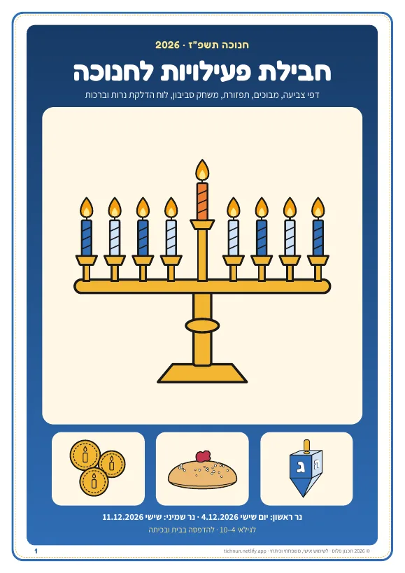
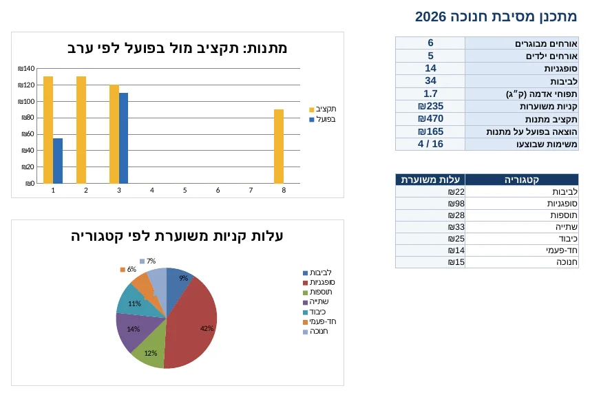

חבילת פעילויות לחנוכה

20 דפים להדפסה: צביעה, מבוכים, תפזורת, משחק סביבון, לוח הדלקה וברכות בניקוד.
₪19
לפרטיםחנוכה תשפ״ז מתחיל ביום שישי 4 בדצמבר 2026 בערב ונמשך עד שבת 12 בדצמבר. כאן תמצאו דפי פעילות להדפסה, מתכנן מסיבה, מחשבון סופגניות ומדריכים.

20 דפים להדפסה: צביעה, מבוכים, תפזורת, משחק סביבון, לוח הדלקה וברכות בניקוד.
₪19
לפרטים
אורחים, כמויות סופגניות ולביבות, רשימת קניות ומעקב מתנות ל-8 לילות.
₪19
לפרטיםחבילת הפעילויות + מתכנן המסיבה. ₪29 במקום ₪38.
חוסכים ₪9| נר | ערב | תאריך | תאריך עברי | נרות + שמש |
|---|---|---|---|---|
| 1 | שישי | 4.12.2026 | כ״ה בכסלו | 1 + 1 |
| 2 | מוצאי שבת | 5.12.2026 | כ״ו בכסלו | 2 + 1 |
| 3 | ראשון | 6.12.2026 | כ״ז בכסלו | 3 + 1 |
| 4 | שני | 7.12.2026 | כ״ח בכסלו | 4 + 1 |
| 5 | שלישי | 8.12.2026 | כ״ט בכסלו | 5 + 1 |
| 6 | רביעי | 9.12.2026 | ל׳ בכסלו | 6 + 1 |
| 7 | חמישי | 10.12.2026 | א׳ בטבת | 7 + 1 |
| 8 | שישי | 11.12.2026 | ב׳ בטבת | 8 + 1 |
מדליקים בערב. בשישי מדליקים לפני נרות שבת, ובמוצאי שבת אחרי צאת השבת. כל הפרטים והברכות.